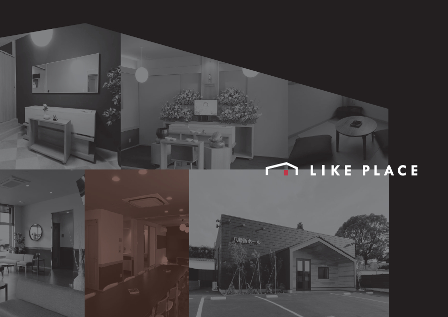

- 制作媒体
- 紙
- 制作期間
- 2ヵ月
- 制作人数
- ディレクター1名、デザイナー1名（担当領域）
こだわりPOINT
- 顧客と直接会話し、目的に合わせて構成の変更を提案
- 豊富な実例写真を掲載し、実績をアピール
- わかりやすい構成（概要→3つの具体→ギャラリー）
概要
葬儀場リース事業の全国普及に向けた営業パンフレットの制作
課題
初期の8ページ案では、葬儀場リースという事業の仕組みや導入メリットを十分に伝えきれず、営業ツールとしての訴求力に課題があった。
取り組み・工夫
- 顧客の理解度と導入意欲を高めるため、メリットや検討に必要な情報を整理・再構築し、22ページの構成へと大幅な拡充・再提案を実施。
- 実際の葬儀場写真を効果的に配置し、現場のイメージを具体化。情報を削ぎ落としたシンプルかつ洗練されたレイアウトにより、読みやすさと事業への信頼感を両立。